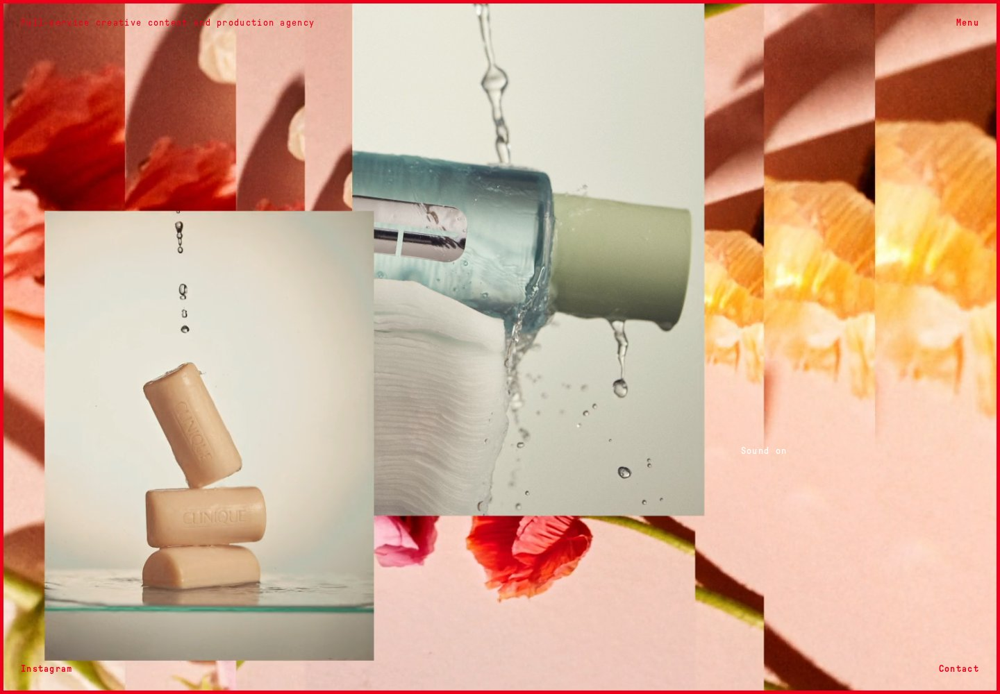

Independent front-end & web developer / 15+ years
Front-end.
Tuned differently.

CH 01 / 09Selected work
Headless development
Black Rabbit
01 / OCT 2024
Next.js, headless WordPressAn immersive website bringing photography, motion and sound together for a product marketing company.